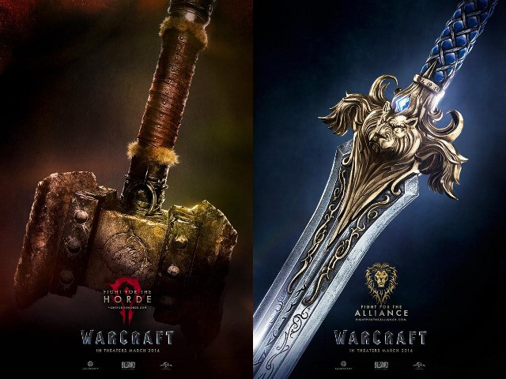
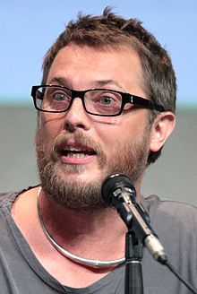
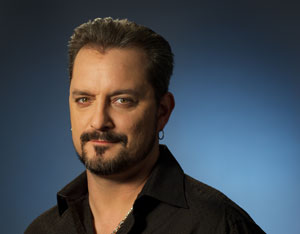

Story

The peaceful realm of Azeroth stands on the brink of war as its civilization faces a fearsome race of invaders. Orc warriors fleeing their home to colonize another. As the dark portal opens to connect the two worlds, one army faces destruction and the other faces extinction. From opposing sides, two heroes are set on a collision course that will decide the fate of their family, their people and their home.
So begins a spectacular saga of power and sacrifice in which war has many faces, and everyone fights for something.
Warcraft the movie is based on the Warcraft III game, created by Blizzard Entertainment.
Duncan Jones
On 30 January 2013, Jones was announced to direct the Warcraft film adaptation.
In his early carreer, Jones was one of many cameramen at his father's widely-televised 50th birthday party directed by Englishman Tim Pope at Madison Square Garden and also at two BowieNet concerts at Roseland Ballroom in New York City in June 2000. He was also the in-game cinematics director for the political simulator Republic: The Revolution, as well as scripting elements of the game.
He directed the Summit Entertainment project Source Code, a science-fiction thriller from Vendome Pictures, which was produced by Mark Gordon.
Chris Metzen
Christopher Vincent Metzen is an American game designer, artist, voice actor and author known for his work creating the fictional universes and scripts for Blizzard Entertainment's three major award-winning media franchises: Warcraft, Diablo and StarCraft. On occasion, Metzen has published his art under the alias "Thundergod". Metzen was hired by Blizzard Entertainment as an animator and an artist; his first work for the company was with the video game Justice League Task Force.
Metzen is currently the Senior Vice President of Story and Franchise Development at Blizzard Entertainment and has assisted the company's projects by providing voice talent for a number of characters, as well as contributing to artistic character design. Outside of Blizzard Entertainment, Metzen has helped Duncan Jones with the story and characters on the Warcraft movie.